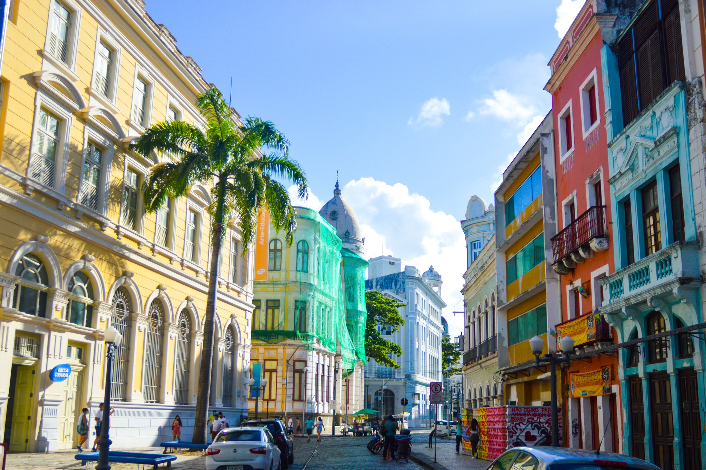
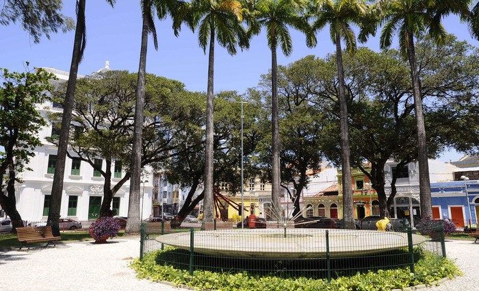

Sua História
Recife Antigo é uma das áreas mais antigas da cidade e foi o local onde os colonizadores portugueses estabeleceram um dos primeiros núcleos urbanos na região, no século XVI. Ao longo dos anos, o bairro passou por várias transformações, incluindo o domínio holandês no século XVII, que deixou influências marcantes na arquitetura local. Hoje, os visitantes podem explorar as ruas de paralelepípedos e os prédios históricos que contam a história rica e diversificada de Recife
Atrações e Pontos Turísticos:
-
Marco Zero
Como mencionado anteriormente, o Marco Zero fica no coração do Recife Antigo. Esta praça é um ponto de partida ideal para explorar o bairro histórico e também abriga o Monumento a Luiz Gonzaga, um famoso músico nordestino.

-
Rua do Bom Jesus
Esta é uma das ruas mais famosas do bairro, conhecida por sua arquitetura colonial e pelo charme de suas fachadas coloridas. É também o local da sinagoga Kahal Zur Israel, considerada a primeira sinagoga das Américas.
 -
Cais do Sertão
Este é um museu interativo dedicado à cultura nordestina e à vida do cantor e compositor Luiz Gonzaga. Oferece uma experiência imersiva na música e na história da região

-
Praça do Arsenal
Esta praça é um centro cultural com espaços para exposições, apresentações artísticas e eventos culturais. É um local vibrante para explorar a cena cultural contemporânea de Recife.
 -
Paço do Frevo
Um museu dedicado ao frevo, um gênero musical e de dança típico de Pernambuco. Os visitantes podem aprender sobre a história e as tradições do frevo, bem como experimentar a dança.

-
Mercado de São José
Embora não esteja no Recife Antigo, está nas proximidades e é um dos mercados mais antigos do Brasil. Oferece uma grande variedade de produtos locais, artesanato e alimentos típicos.